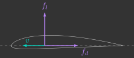
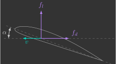
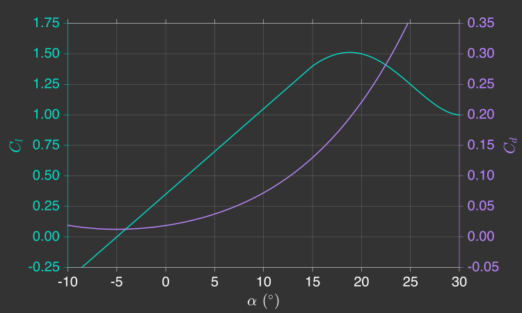

Aerodinâmica
Para conseguir controlar um drone, é essencial primeiro entender a física por trás dele. Aqui, você vai aprender os conceitos básicos de aerodinâmica que explicam como o drone se mantém no ar.
Aerofólio
O modelo matemático de um drone, qualquer que seja seu tipo, contém diversos parâmetros aerodinâmicos. No entanto, para obter o conhecimento necessário, começaremos examinando as forças aerodinâmicas em um aerofólio.
Forças aerodinâmicas
A figura abaixo mostra a secção transversal de um aerofólio, um corpo teórico moldado para produzir sustentação quando colocado em um fluxo de ar.

Apesar de um aerofólio ser projetado para produzir uma força desejada de sustentação \(f_l\) (perpendicular à velocidade \(v\)), ele também produz uma força indesejada de arrasto \(f_d\) (paralela à velocidade \(v\)): $$ f_l = \frac{1}{2} \rho A C_l v^2 \qquad f_d = \frac{1}{2} \rho A C_d v^2 $$
Onde:
- \(\rho\) - Densidade do ar (\(kg/m^3\))
- \(A\) - Área de superfície (\(m^2\))
- \(C_l\) - Coeficiente de sustentação (adimensional)
- \(C_d\) - Coeficiente de arrasto (adimensional)
- \(v\) - Velocidade linear do aerofólio (\(m/s\))
Coeficientes aerodinâmicos
Os coeficientes de sustentação e arrasto não são constantes, eles variam conforme as seguintes condições aerodinâmicas:
- Ângulo de ataque (\(\alpha\)), que é o ângulo que a linha média do aerofólio (também chamada de ``corda'') faz com o vetor velocidade
- Número de Reynolds (\(\frac{\rho v D}{\mu}\)), que é uma medida adimensional e define o regime de escoamento do ar (laminar ou turbulento)
- Número Mach (\(\frac{v}{v_s}\)), que é a razão entre a velocidade e a velocidade do som e define o regime de velocidade (subsônica, supersônica e hipersônica)
Para aerofólios que se movem a velocidades subsônicas (\(<1.000km/h\)), apenas o ângulo de ataque \(\alpha\), representado na figura abaixo, acaba apresentando uma influência significativa.

Há diversos perfils diferentes para um aerfofólio. Um bastante conhecido e utilizado é o perfil Clark Y, cujos coeficientes de arrasto e sustentação em função do ângulo de ataque são bem conhecidos e dados1 pelo gráfico abaixo.

Enquanto o coeficiente de arrasto só aumenta com o ângulo de ataque, o coeficiente de sustentação tem um ponto máximo (\(\alpha=18^{\circ}\)). Esse ponto é conhecido como "estol" ou simplesmente "perda de sustentação", e ele ocorre quando o fluxo de ar descola da asa (deixa de seguir o contorno superior da asa gerando uma turbulência). Note que o coeficiente de sustentação é nulo com uma leve inclinação negativa (\(\alpha=-5^{\circ}\)), e negativo abaixo disso.
Exercício 1
Para consolidar esses conceitos, considere um drone de asas fixas (asa voadora) em cruzeiro, isto é, voando no plano com velocidade constante e as seguintes características2:
- Massa de \(40g\) e comprimento de \(10cm\)
- Asas perfil Clark Y com \(10cm\) de envergadura
- Propulsores com \(60\%\) de eficiência
- Bateria de \(3,7V\) e \(350mAh\)
a) Desenhe o diagrama de corpo livre das forças que atuam nesse drone
b) Determine a área total das asas do drone assumindo que seu corpo é triangular
c) Determine os coeficientes de arrasto e sustentação das asas do drone
d) Determine a velocidade do drone
e) Determine a força de empuxo dos propulsores do drone
f) Determine o consumo energético do drone
g) Determine quanto tempo que o drone consegue permanecer no ar
Hélice
Uma hélice é composta por \(n\) pás, onde cada pá pode ser interpretada como um aerofólio.
Forças e torques aerodinâmicos
Quando a hélice rotaciona, surgem forças de sustentação e arrasto em cada uma de suas pás, conforme a figura abaixo.

Onde:
- \(d\) - Distância do centro de pressão ao eixo de rotação (\(m\))
- \(\omega\) - Velocidade angular da hélice (\(rad/s\))
Exercício 2
Determine as forças de sustentação \(f_l\) e arrasto \(f_d\) nas pás da hélice em função de sua velocidade angular
Resposta
As forças de sustentação e arrasto em cada uma das pás podem ser representadas por uma única força de sustentação e torque de arrasto da hélice, conforme a figura abaixo.

Exercício 3
Determine a força de sustentação \(f\) e torque de arrasto \(\tau\) da hélice
Resposta
Como todos os parâmetros são constantes e apenas a velocidade angular \(\omega\) varia, a força de sustentação e torque de arrasto de uma hélice podem ser simplificados por:
Onde:
- \(k_l\) - Coeficiente de sustentação da hélice (\(N.s^2/rad^2\))
- \(k_d\) - Coeficiente de arrasto da hélice (\(N.m.s^2/rad^2\))
Constantes aerodinâmicas
Ou seja, apenas dois parâmetros definem a força e o torque que uma hélice produz, que dependem do quadrado de sua velocidade angular:

Exercício 4
Com o auxílio de uma régua, estime3 as constantes aerodinâmicas das hélices do Bitcraze Crazyflie e anote elas abaixo. Assuma que a hélice pode ser aproximada a um perfil Clark Y com ângulo de ataque \(\alpha = 5^\circ\), sendo a constante de sustentação igual, porém a constante de arrasto 10x maior4.
Resposta
Esses dois parâmetros serão determinados experimentalmente (\(k_l\) e \(k_d\)), e você verá que a chegará em valores muito próximos aos estimados acima.
Exercício 5
Para consolidar esses conceitos, considere um drone multi-rotor (quadricoptero) pairando no ar, isto é, parado no espaço com as seguintes características2:
- Massa de \(40g\)
- Hélices com constante de sustentação de \(2,0\times10^{-8} \text{N}.\text{s}^2/\text{rad}^2\) e constante de arrasto de \(2,0\times10^{-10} \text{N}.\text{m}.\text{s}^2\text{/rad}^2\)
- Motores elétricos com \(90\%\) de eficiência
- Bateria de \(3,7V\) e \(350mAh\)
a) Desenhe o diagrama de corpo livre das forças que atuam nesse drone
b) Determine a velocidade angular das hélices do drone
c) Determine o torque dos motores do drone
d) Determine o consumo energético do drone
e) Determine quanto tempo que o drone consegue permanecer no ar
Compare este resultado, do drone multi rotor, com o anterior, do drone de asas fixa. Note como o drone de asa fixa consegue permanecer muito mais tempo no ar (>10x), com a desvatagem de não conseguir permanecer parado e nem decolar/pousar na vertical como um drone multi-rotor.